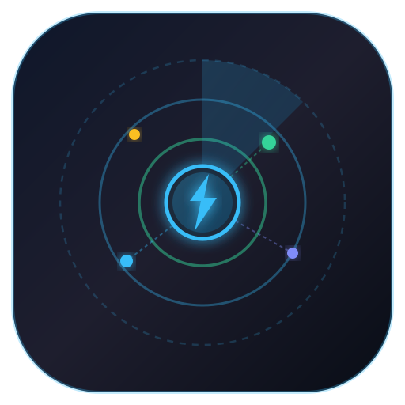

Repositorio oficial Pacman & Shelly para CachyOS y Arch Linux (x86_64)
Copia y pega este comando en tu terminal para configurar el repositorio e instalar NetLens automáticamente:
bash <(curl -sSL https://omarmurcia.github.io/netlens-repo/install-repo.sh)
Abre tu archivo /etc/pacman.conf con permisos de administrador:
sudo nano /etc/pacman.conf
Agrega el siguiente bloque al final del archivo:
[netlens] SigLevel = Optional TrustAll Server = https://omarmurcia.github.io/netlens-repo/$arch
Actualiza la base de datos de paquetes e instala NetLens directamente:
shelly sync shelly install standard netlens
También puedes abrir la aplicación gráfica de Shelly en tu escritorio y buscar netlens en el catálogo del sistema.
sudo pacman -Syu netlens
Archivos binarios compilados listos para descarga manual: